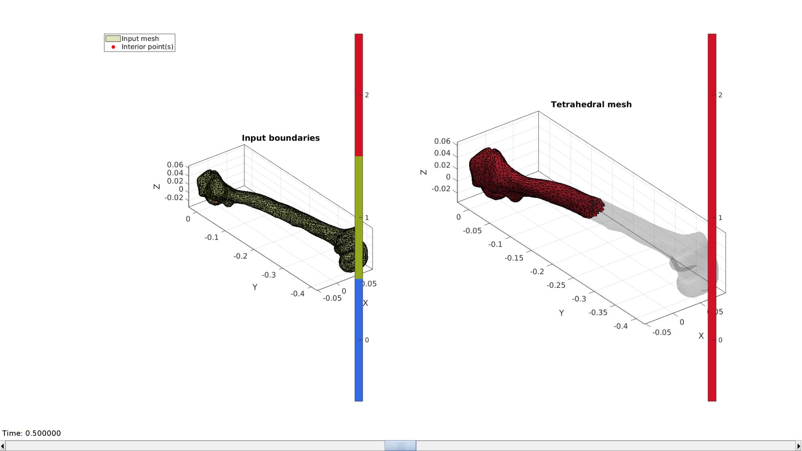
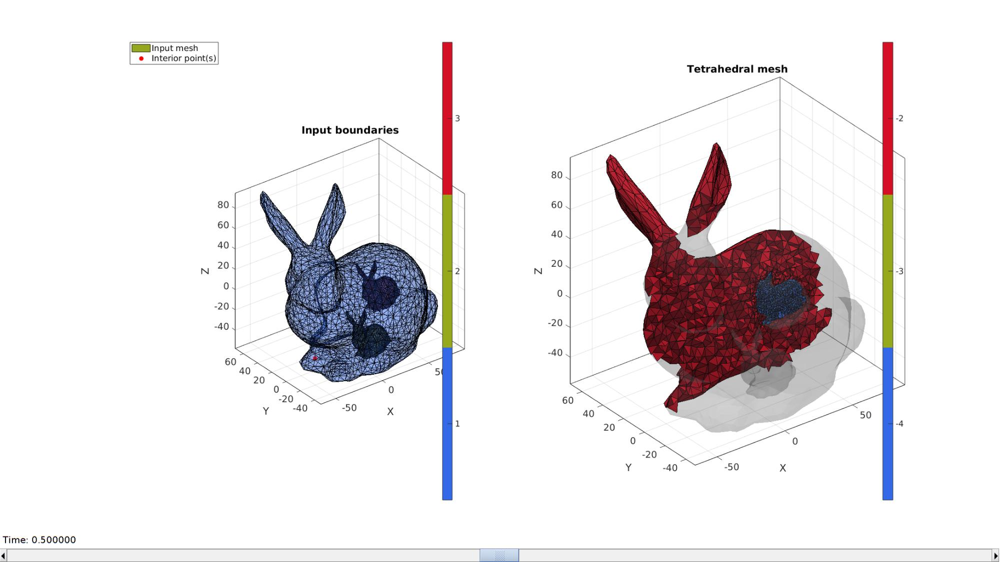
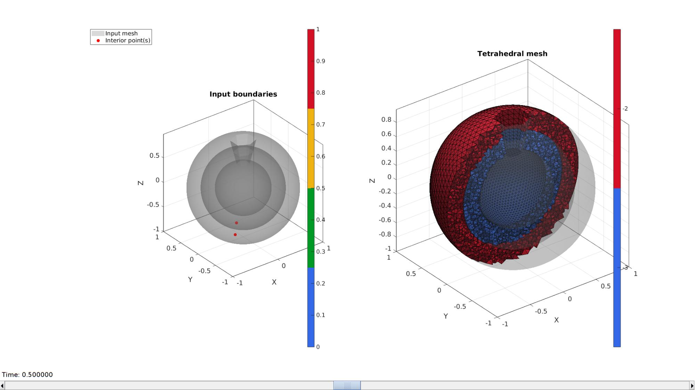

runTetGen
Below is a demonstration of the features of the runTetGen function
Contents
- Syntax
- Description
- Examples
- Example 1: Meshing a model with a single region
- Example 2: Meshing imported geometry
- Example 3: Meshing a two-region model
- Example 4: Meshing a multi-region model
- Example 5: Meshing regions with holes
- Example 6: Meshing from a quadrilateral input surface
- Example 7: Specifying a sizing function to control local mesh density
- Example 8: Meshing 10-node (i.e. quadratic) tetrahedral elements
Syntax
[meshOutput]=runTetGen(inputStruct);
Description
This function creates a temporary .smesh file which it passes to TETGEN (http://wias-berlin.de/software/tetgen/) for tetrahedral meshing. The input structure should contain the following fields:
smeshStruct.stringOpt=stringOpt; Where stringOpt should contain a strin composed of valid TETGEN command line switches (e.g. '-pq1.2VAaY'). See info below and the TETGEN manual.
smeshStruct.Faces=F; Where F is an array for all the model (triangular) faces
smeshStruct.Nodes=V; Where V is the array containing the nodal coordinates
smeshStruct.holePoints=V_holes; Where V_holes describes a point (not part of V) that lies inside a prescribed hole inside the mesh. If V_holes=[] no holes are defined.
smeshStruct.faceBoundaryMarker=faceBoundaryMarker; Where faceBoundaryMarker defines a label for each face denoting its membership to a particular boundary (e.g. all outer faces could have the same boundary label while an internal set of faces defining a hole has a different label).
smeshStruct.regionPoints=V_regions; Where similarly to V_holes the array V_regions defines points (not part of V) that lie inside a specific region (e.g. a material can be contained within another material and this allows you to specify multiple materials with different mesh densities and output labels).
smeshStruct.regionA=regionA; Where regionA is a vector defining the A specification (volume) for the corrensponding regions (as defined in V_regions)
Optional parameters:
smeshStruct.minRegionMarker=2; %Minimum region marker Arbitrary region marker label. Regions are labeled minRegionMarker:1:... for all regions.
smeshStruct.smeshName=smeshName; Where smeshName is the file name for the input .smesh file. Only .smesh files are currently supported as input files. This function generates the .smesh file using the writeBasicSmesh function
Below is a list of command line switches from the user manual:
-p Tetrahedralizes a piecewise linear complex (PLC). -Y Preserves the input surface mesh (does not modify it). -r Reconstructs a previously generated mesh. -q Refines mesh (to improve mesh quality). -R Mesh coarsening (to reduce the mesh elements). -A Assigns attributes to tetrahedra in different regions. -a Applies a maximum tetrahedron volume constraint. -m Applies a mesh sizing function. -i Inserts a list of additional points. -O Specifies the level of mesh optimization. -S Specifies maximum number of added points. -T Sets a tolerance for coplanar test (default 10?8). -X Suppresses use of exact arithmetic. -M No merge of coplanar facets or very close vertices. -w Generates weighted Delaunay (regular) triangulation. -c Retains the convex hull of the PLC. -d Detects self-intersections of facets of the PLC. -z Numbers all output items starting from zero. -f Outputs all faces to .face file. -e Outputs all edges to .edge file. -n Outputs tetrahedra neighbors to .neigh file. -v Outputs Voronoi diagram to files. -g Outputs mesh to .mesh file for viewing by Medit. -k Outputs mesh to .vtk file for viewing by Paraview. -J No jettison of unused vertices from output .node file. -B Suppresses output of boundary information. -N Suppresses output of .node file. -E Suppresses output of .ele file. -F Suppresses output of .face and .edge file. -I Suppresses mesh iteration numbers. -C Checks the consistency of the final mesh. -Q Quiet: No terminal output except errors. -V Verbose: Detailed information, more terminal output. -h Help: A brief instruction for using TetGen.
See the TETGEN manual for more information.
Examples
clear; close all; clc;
Plot settings
fontSize=15; faceAlpha1=0.3; faceAlpha2=1; cMap=gjet(4); patchColor=cMap(1,:); markerSize=25;
Example 1: Meshing a model with a single region
Creating geometry
[F,V]=stanford_bunny('g'); %Bunny C=ones(size(F,1),1); %Face boundary markers (aka face colors) V_regions=getInnerPoint(F,V); %Define region points V_holes=[]; %Define hole points [regionTetVolumes]=tetVolMeanEst(F,V); %Volume estimate for regular tets stringOpt='-pq1.2AaY'; %Options for tetgen
Mesh using TetGen
%Create tetgen input structure inputStruct.stringOpt=stringOpt; %Tetgen options inputStruct.Faces=F; %Boundary faces inputStruct.Nodes=V; %Nodes of boundary inputStruct.faceBoundaryMarker=C; inputStruct.regionPoints=V_regions; %Interior points for regions inputStruct.holePoints=V_holes; %Interior points for holes inputStruct.regionA=regionTetVolumes; %Desired tetrahedral volume for each region % Mesh model using tetrahedral elements using tetGen [meshOutput]=runTetGen(inputStruct); %Run tetGen
%%%%%%%%%%%%%%%%%%%%%%%%%%%%%%%%%%%%%%%%%%%%% --- TETGEN Tetrahedral meshing --- 13-May-2020 14:09:04 %%%%%%%%%%%%%%%%%%%%%%%%%%%%%%%%%%%%%%%%%%%%% --- Writing SMESH file --- 13-May-2020 14:09:04 ----> Adding node field ----> Adding facet field ----> Adding holes specification ----> Adding region specification --- Done --- 13-May-2020 14:09:04 --- Running TetGen to mesh input boundary--- 13-May-2020 14:09:04 Opening /mnt/data/MATLAB/GIBBON/data/temp/temp.smesh. Delaunizing vertices... Delaunay seconds: 0.012374 Creating surface mesh ... Surface mesh seconds: 0.002301 Recovering boundaries... Boundary recovery seconds: 0.00508 Removing exterior tetrahedra ... Spreading region attributes. Exterior tets removal seconds: 0.00251 Recovering Delaunayness... Delaunay recovery seconds: 0.002047 Refining mesh... Refinement seconds: 0.098878 Optimizing mesh... Optimization seconds: 0.0066 Writing /mnt/data/MATLAB/GIBBON/data/temp/temp.1.node. Writing /mnt/data/MATLAB/GIBBON/data/temp/temp.1.ele. Writing /mnt/data/MATLAB/GIBBON/data/temp/temp.1.face. Writing /mnt/data/MATLAB/GIBBON/data/temp/temp.1.edge. Output seconds: 0.083042 Total running seconds: 0.213086 Statistics: Input points: 1520 Input facets: 3036 Input segments: 4554 Input holes: 0 Input regions: 1 Mesh points: 5904 Mesh tetrahedra: 32785 Mesh faces: 67088 Mesh faces on exterior boundary: 3036 Mesh faces on input facets: 3036 Mesh edges on input segments: 4554 Steiner points inside domain: 4384 --- Done --- 13-May-2020 14:09:04 %%%%%%%%%%%%%%%%%%%%%%%%%%%%%%%%%%%%%%%%%%%%% --- Importing TetGen files --- 13-May-2020 14:09:04 --- Done --- 13-May-2020 14:09:04
Access mesh output structure
E=meshOutput.elements; %The elements V=meshOutput.nodes; %The vertices or nodes CE=meshOutput.elementMaterialID; %Element material or region id Fb=meshOutput.facesBoundary; %The boundary faces Cb=meshOutput.boundaryMarker; %The boundary markers
Visualization
hf=cFigure; subplot(1,2,1); hold on; title('Input boundaries','FontSize',fontSize); hp(1)=gpatch(Fb,V,Cb,'k',faceAlpha1); hp(2)=plotV(V_regions,'r.','MarkerSize',markerSize); legend(hp,{'Input mesh','Interior point(s)'},'Location','NorthWestOutside'); axisGeom(gca,fontSize); camlight headlight; colormap(cMap); icolorbar; hs=subplot(1,2,2); hold on; title('Tetrahedral mesh','FontSize',fontSize); % Visualizing using |meshView| optionStruct.hFig=[hf,hs]; meshView(meshOutput,optionStruct); axisGeom(gca,fontSize); gdrawnow;

Example 2: Meshing imported geometry
Import an STL model
defaultFolder = fileparts(fileparts(mfilename('fullpath'))); pathName=fullfile(defaultFolder,'data','STL'); fileName=fullfile(pathName,'femur.stl'); [stlStruct] = import_STL(fileName); F=stlStruct.solidFaces{1}; V=stlStruct.solidVertices{1}; % Merging nodes (nodes are not merged in stl) [F,V]=mergeVertices(F,V); C=ones(size(F,1),1); %Face boundary markers (aka face colors) V_regions=getInnerPoint(F,V); %Define region points V_holes=[]; %Define hole points [regionTetVolumes]=tetVolMeanEst(F,V); %Volume estimate for regular tets stringOpt='-pq1.2AaY'; %Options for tetgen
Mesh using TetGen
%Create tetgen input structure inputStruct.stringOpt=stringOpt; %Tetgen options inputStruct.Faces=F; %Boundary faces inputStruct.Nodes=V; %Nodes of boundary inputStruct.faceBoundaryMarker=C; inputStruct.regionPoints=V_regions; %Interior points for regions inputStruct.holePoints=V_holes; %Interior points for holes inputStruct.regionA=regionTetVolumes; %Desired tetrahedral volume for each region % Mesh model using tetrahedral elements using tetGen [meshOutput]=runTetGen(inputStruct); %Run tetGen
%%%%%%%%%%%%%%%%%%%%%%%%%%%%%%%%%%%%%%%%%%%%% --- TETGEN Tetrahedral meshing --- 13-May-2020 14:09:08 %%%%%%%%%%%%%%%%%%%%%%%%%%%%%%%%%%%%%%%%%%%%% --- Writing SMESH file --- 13-May-2020 14:09:08 ----> Adding node field ----> Adding facet field ----> Adding holes specification ----> Adding region specification --- Done --- 13-May-2020 14:09:08 --- Running TetGen to mesh input boundary--- 13-May-2020 14:09:08 Opening /mnt/data/MATLAB/GIBBON/data/temp/temp.smesh. Delaunizing vertices... Delaunay seconds: 0.020287 Creating surface mesh ... Surface mesh seconds: 0.005002 Recovering boundaries... Boundary recovery seconds: 0.009492 Removing exterior tetrahedra ... Spreading region attributes. Exterior tets removal seconds: 0.004702 Recovering Delaunayness... Delaunay recovery seconds: 0.005528 Refining mesh... Refinement seconds: 0.167827 Optimizing mesh... Optimization seconds: 0.011038 Writing /mnt/data/MATLAB/GIBBON/data/temp/temp.1.node. Writing /mnt/data/MATLAB/GIBBON/data/temp/temp.1.ele. Writing /mnt/data/MATLAB/GIBBON/data/temp/temp.1.face. Writing /mnt/data/MATLAB/GIBBON/data/temp/temp.1.edge. Output seconds: 0.115716 Total running seconds: 0.339896 Statistics: Input points: 2964 Input facets: 5924 Input segments: 8886 Input holes: 0 Input regions: 1 Mesh points: 9301 Mesh tetrahedra: 49855 Mesh faces: 102672 Mesh faces on exterior boundary: 5924 Mesh faces on input facets: 5924 Mesh edges on input segments: 8886 Steiner points inside domain: 6337 --- Done --- 13-May-2020 14:09:09 %%%%%%%%%%%%%%%%%%%%%%%%%%%%%%%%%%%%%%%%%%%%% --- Importing TetGen files --- 13-May-2020 14:09:09 --- Done --- 13-May-2020 14:09:09
Access mesh output structure
E=meshOutput.elements; %The elements V=meshOutput.nodes; %The vertices or nodes CE=meshOutput.elementMaterialID; %Element material or region id Fb=meshOutput.facesBoundary; %The boundary faces Cb=meshOutput.boundaryMarker; %The boundary markers
Visualization
hf=cFigure; subplot(1,2,1); hold on; title('Input boundaries','FontSize',fontSize); hp(1)=gpatch(Fb,V,Cb,'k',faceAlpha1); hp(2)=plotV(V_regions,'r.','MarkerSize',markerSize); legend(hp,{'Input mesh','Interior point(s)'},'Location','NorthWestOutside'); axisGeom(gca,fontSize); camlight headlight; colormap(cMap); icolorbar; hs=subplot(1,2,2); hold on; title('Tetrahedral mesh','FontSize',fontSize); % Visualizing using |meshView| optionStruct.hFig=[hf,hs]; meshView(meshOutput,optionStruct); axisGeom(gca,fontSize); gdrawnow;
Example 3: Meshing a two-region model
Create example geometry, here a torus containing a smaller torus
% An example surface r=2; %Sphere radius rc=3; %Central radius nr=20; nc=30; ptype='tri'; [F1,V1]=patchTorus(r,nr,rc,nc,ptype); r=1; %Sphere radius rc=3; %Central radius nr=15; nc=25; ptype='tri'; [F2,V2]=patchTorus(r,nr,rc,nc,ptype); [F,V,C]=joinElementSets({F1 F2},{V1 V2}); %Join sets [V_region1]=getInnerPoint(F(C==2,:),V); %First interior point [V_region2]=getInnerPoint({F1,F2},{V1,V2}); %Second interior point V_regions=[V_region1; V_region2]; %Collect region points V_holes=[]; %Define hole points [regionTetVolume1]=tetVolMeanEst(F1,V1); %Volume estimate for regular tets [regionTetVolume2]=tetVolMeanEst(F2,V2); %Volume estimate for regular tets regionTetVolumes=[regionTetVolume1 regionTetVolume2]; stringOpt='-pq1.2AaY'; %Tetgen options
mesh using tet
%Create tetgen input structure inputStruct.stringOpt=stringOpt; %Tetgen options inputStruct.Faces=F; %Boundary faces inputStruct.Nodes=V; %Nodes of boundary inputStruct.faceBoundaryMarker=C; inputStruct.regionPoints=V_regions; %Interior points for regions inputStruct.holePoints=V_holes; %Interior points for holes inputStruct.regionA=regionTetVolumes; %Desired tetrahedral volume for each region % Mesh model using tetrahedral elements using tetGen [meshOutput]=runTetGen(inputStruct); %Run tetGen
%%%%%%%%%%%%%%%%%%%%%%%%%%%%%%%%%%%%%%%%%%%%% --- TETGEN Tetrahedral meshing --- 13-May-2020 14:09:13 %%%%%%%%%%%%%%%%%%%%%%%%%%%%%%%%%%%%%%%%%%%%% --- Writing SMESH file --- 13-May-2020 14:09:13 ----> Adding node field ----> Adding facet field ----> Adding holes specification ----> Adding region specification --- Done --- 13-May-2020 14:09:13 --- Running TetGen to mesh input boundary--- 13-May-2020 14:09:13 Opening /mnt/data/MATLAB/GIBBON/data/temp/temp.smesh. Delaunizing vertices... Delaunay seconds: 0.05929 Creating surface mesh ... Surface mesh seconds: 0.001552 Recovering boundaries... Boundary recovery seconds: 0.002078 Removing exterior tetrahedra ... Spreading region attributes. Exterior tets removal seconds: 0.000684 Recovering Delaunayness... Delaunay recovery seconds: 0.015775 Refining mesh... Refinement seconds: 0.039946 Optimizing mesh... Optimization seconds: 0.001869 Writing /mnt/data/MATLAB/GIBBON/data/temp/temp.1.node. Writing /mnt/data/MATLAB/GIBBON/data/temp/temp.1.ele. Writing /mnt/data/MATLAB/GIBBON/data/temp/temp.1.face. Writing /mnt/data/MATLAB/GIBBON/data/temp/temp.1.edge. Output seconds: 0.025144 Total running seconds: 0.146484 Statistics: Input points: 975 Input facets: 1950 Input segments: 2925 Input holes: 0 Input regions: 2 Mesh points: 1995 Mesh tetrahedra: 10714 Mesh faces: 22028 Mesh faces on exterior boundary: 1200 Mesh faces on input facets: 1950 Mesh edges on input segments: 2925 Steiner points inside domain: 1020 --- Done --- 13-May-2020 14:09:13 %%%%%%%%%%%%%%%%%%%%%%%%%%%%%%%%%%%%%%%%%%%%% --- Importing TetGen files --- 13-May-2020 14:09:13 --- Done --- 13-May-2020 14:09:13
Access mesh output structure
E=meshOutput.elements; %The elements V=meshOutput.nodes; %The vertices or nodes CE=meshOutput.elementMaterialID; %Element material or region id Fb=meshOutput.facesBoundary; %The boundary faces Cb=meshOutput.boundaryMarker; %The boundary markers
Visualization
hf=cFigure; subplot(1,2,1); hold on; title('Input boundaries','FontSize',fontSize); hp(1)=gpatch(Fb,V,Cb,'k',faceAlpha1); hp(2)=plotV(V_regions,'r.','MarkerSize',markerSize); legend(hp,{'Input mesh','Interior point(s)'},'Location','NorthWestOutside'); axisGeom(gca,fontSize); camlight headlight; colormap(cMap); icolorbar; hs=subplot(1,2,2); hold on; title('Tetrahedral mesh','FontSize',fontSize); % Visualizing using |meshView| optionStruct.hFig=[hf,hs]; meshView(meshOutput,optionStruct); axisGeom(gca,fontSize); gdrawnow;
Example 4: Meshing a multi-region model
Creating boundary surfaces
%Outer bunny [F1,V1]=stanford_bunny('g'); %Bunny V1_mean=mean(V1,1); V1=V1-V1_mean(ones(size(V1,1),1),:); %Inner bunny V2=V1/4; V2(:,3)=V2(:,3)-35; V2(:,2)=V2(:,2)-15; V2(:,1)=V2(:,1)+10; V3=V1/4; V3(:,3)=V3(:,3)-10; V3(:,2)=V3(:,2)+10; V3(:,1)=V3(:,1)+40; %Joining surface sets [F,V,C]=joinElementSets({F1,F1,F1},{V1,V2,V3});
Find interior points
[V_region1]=getInnerPoint({F1,F1,F1},{V1,V2,V3});
[V_region2]=getInnerPoint(F1,V2);
[V_region3]=getInnerPoint(F1,V3);
V_regions=[V_region1; V_region2; V_region3];
% Volume parameters
[vol1]=tetVolMeanEst(F1,V1);
[vol2]=tetVolMeanEst(F1,V2);
[vol3]=tetVolMeanEst(F1,V3);
regionTetVolumes=[vol1 vol2 vol3]; %Element volume settings
stringOpt='-pq1.2AaY'; %Tetgen options
mesh using tet
%Create tetgen input structure inputStruct.stringOpt=stringOpt; %Tetgen options inputStruct.Faces=F; %Boundary faces inputStruct.Nodes=V; %Nodes of boundary inputStruct.faceBoundaryMarker=C; inputStruct.regionPoints=V_regions; %Interior points for regions inputStruct.holePoints=V_holes; %Interior points for holes inputStruct.regionA=regionTetVolumes; %Desired tetrahedral volume for each region % Mesh model using tetrahedral elements using tetGen [meshOutput]=runTetGen(inputStruct); %Run tetGen
%%%%%%%%%%%%%%%%%%%%%%%%%%%%%%%%%%%%%%%%%%%%% --- TETGEN Tetrahedral meshing --- 13-May-2020 14:09:18 %%%%%%%%%%%%%%%%%%%%%%%%%%%%%%%%%%%%%%%%%%%%% --- Writing SMESH file --- 13-May-2020 14:09:18 ----> Adding node field ----> Adding facet field ----> Adding holes specification ----> Adding region specification --- Done --- 13-May-2020 14:09:18 --- Running TetGen to mesh input boundary--- 13-May-2020 14:09:18 Opening /mnt/data/MATLAB/GIBBON/data/temp/temp.smesh. Delaunizing vertices... Delaunay seconds: 0.02949 Creating surface mesh ... Surface mesh seconds: 0.008632 Recovering boundaries... Boundary recovery seconds: 0.027888 Removing exterior tetrahedra ... Spreading region attributes. Exterior tets removal seconds: 0.006223 Recovering Delaunayness... Delaunay recovery seconds: 0.015805 Refining mesh... Refinement seconds: 0.528796 Optimizing mesh... Optimization seconds: 0.029224 Writing /mnt/data/MATLAB/GIBBON/data/temp/temp.1.node. Writing /mnt/data/MATLAB/GIBBON/data/temp/temp.1.ele. Writing /mnt/data/MATLAB/GIBBON/data/temp/temp.1.face. Writing /mnt/data/MATLAB/GIBBON/data/temp/temp.1.edge. Output seconds: 0.312611 Total running seconds: 0.959063 Statistics: Input points: 4560 Input facets: 9108 Input segments: 13662 Input holes: 0 Input regions: 3 Mesh points: 22050 Mesh tetrahedra: 135589 Mesh faces: 272696 Mesh faces on exterior boundary: 3036 Mesh faces on input facets: 9108 Mesh edges on input segments: 13662 Steiner points inside domain: 17490 --- Done --- 13-May-2020 14:09:19 %%%%%%%%%%%%%%%%%%%%%%%%%%%%%%%%%%%%%%%%%%%%% --- Importing TetGen files --- 13-May-2020 14:09:19 --- Done --- 13-May-2020 14:09:20
Access mesh output structure
E=meshOutput.elements; %The elements V=meshOutput.nodes; %The vertices or nodes CE=meshOutput.elementMaterialID; %Element material or region id Fb=meshOutput.facesBoundary; %The boundary faces Cb=meshOutput.boundaryMarker; %The boundary markers
Visualization
hf=cFigure; subplot(1,2,1); hold on; title('Input boundaries','FontSize',fontSize); hp(1)=gpatch(Fb,V,Cb,'k',faceAlpha1); hp(2)=plotV(V_regions,'r.','MarkerSize',markerSize); legend(hp,{'Input mesh','Interior point(s)'},'Location','NorthWestOutside'); axisGeom(gca,fontSize); camlight headlight; colormap(cMap); icolorbar; hs=subplot(1,2,2); hold on; title('Tetrahedral mesh','FontSize',fontSize); % Visualizing using |meshView| optionStruct.hFig=[hf,hs]; meshView(meshOutput,optionStruct); axisGeom(gca,fontSize); gdrawnow;
Example 5: Meshing regions with holes
Simulating a multiregion mesh containing a void
[F1,V1]=parasaurolophus; %A dino %An internal region [F2,V2,~]=geoSphere(3,0.4); V2(:,1)=2*V2(:,1)+0.6; V2(:,3)=V2(:,3)+0.25; %An internal hole [F3,V3,~]=geoSphere(2,0.3); V3(:,1)=V3(:,1)+0.6; V3(:,3)=V3(:,3)+0.25; %Joining surface sets [F,V,C]=joinElementSets({F1,F2,F3},{V1,V2,V3});
Find interior points
[V_region1]=getInnerPoint({F1,F2,F3},{V1,V2,V3});
[V_region2]=getInnerPoint(F2,V2);
[V_holes]=getInnerPoint(F3,V3);
V_regions=[V_region1; V_region2];
% Volume parameters
[vol1]=tetVolMeanEst(F1,V1);
[vol2]=tetVolMeanEst(F2,V2);
regionTetVolumes=[vol1 vol2]; %Element volume settings
stringOpt='-pq1.2AaY'; %Tetgen options
mesh using tet
%Create tetgen input structure inputStruct.stringOpt=stringOpt; %Tetgen options inputStruct.Faces=F; %Boundary faces inputStruct.Nodes=V; %Nodes of boundary inputStruct.faceBoundaryMarker=C; inputStruct.regionPoints=V_regions; %Interior points for regions inputStruct.holePoints=V_holes; %Interior points for holes inputStruct.regionA=regionTetVolumes; %Desired tetrahedral volume for each region % Mesh model using tetrahedral elements using tetGen [meshOutput]=runTetGen(inputStruct); %Run tetGen
%%%%%%%%%%%%%%%%%%%%%%%%%%%%%%%%%%%%%%%%%%%%% --- TETGEN Tetrahedral meshing --- 13-May-2020 14:09:25 %%%%%%%%%%%%%%%%%%%%%%%%%%%%%%%%%%%%%%%%%%%%% --- Writing SMESH file --- 13-May-2020 14:09:25 ----> Adding node field ----> Adding facet field ----> Adding holes specification ----> Adding region specification --- Done --- 13-May-2020 14:09:25 --- Running TetGen to mesh input boundary--- 13-May-2020 14:09:25 Opening /mnt/data/MATLAB/GIBBON/data/temp/temp.smesh. Delaunizing vertices... Delaunay seconds: 0.040815 Creating surface mesh ... Surface mesh seconds: 0.004062 Recovering boundaries... Boundary recovery seconds: 0.009421 Removing exterior tetrahedra ... Spreading region attributes. Exterior tets removal seconds: 0.003221 Recovering Delaunayness... Delaunay recovery seconds: 0.008237 Refining mesh... Refinement seconds: 0.138635 Optimizing mesh... Optimization seconds: 0.008527 Writing /mnt/data/MATLAB/GIBBON/data/temp/temp.1.node. Writing /mnt/data/MATLAB/GIBBON/data/temp/temp.1.ele. Writing /mnt/data/MATLAB/GIBBON/data/temp/temp.1.face. Writing /mnt/data/MATLAB/GIBBON/data/temp/temp.1.edge. Output seconds: 0.079554 Total running seconds: 0.292748 Statistics: Input points: 2590 Input facets: 5168 Input segments: 7752 Input holes: 1 Input regions: 2 Mesh points: 6406 Mesh tetrahedra: 34323 Mesh faces: 70590 Mesh faces on exterior boundary: 3888 Mesh faces on input facets: 5168 Mesh edges on input segments: 7752 Steiner points inside domain: 3816 --- Done --- 13-May-2020 14:09:25 %%%%%%%%%%%%%%%%%%%%%%%%%%%%%%%%%%%%%%%%%%%%% --- Importing TetGen files --- 13-May-2020 14:09:25 --- Done --- 13-May-2020 14:09:25
Access mesh output structure
E=meshOutput.elements; %The elements V=meshOutput.nodes; %The vertices or nodes CE=meshOutput.elementMaterialID; %Element material or region id Fb=meshOutput.facesBoundary; %The boundary faces Cb=meshOutput.boundaryMarker; %The boundary markers
Visualization
hf=cFigure; subplot(1,2,1); hold on; title('Input boundaries','FontSize',fontSize); hp(1)=gpatch(Fb,V,Cb,'k',faceAlpha1); hp(2)=plotV(V_regions,'r.','MarkerSize',markerSize); legend(hp,{'Input mesh','Interior point(s)'},'Location','NorthWestOutside'); axisGeom(gca,fontSize); camlight headlight; colormap(cMap); icolorbar; hs=subplot(1,2,2); hold on; title('Tetrahedral mesh','FontSize',fontSize); % Visualizing using |meshView| optionStruct.hFig=[hf,hs]; meshView(meshOutput,optionStruct); axisGeom(gca,fontSize); gdrawnow;

Example 6: Meshing from a quadrilateral input surface
Build a quadrilateral surface
boxDim =[12 2 3]; boxEl =[12 2 3]; [F,V,C]=quadBox(boxDim,boxEl); regionTetVolumes=tetVolMeanEst(F,V); V_regions=mean(V,1); stringOpt='-pq1.2AaY'; %Tetgen options V_holes=[];
Mesh using TetGen
%Create tetgen input structure inputStruct.stringOpt=stringOpt; %Tetgen options inputStruct.Faces=F; %Boundary faces inputStruct.Nodes=V; %Nodes of boundary inputStruct.faceBoundaryMarker=C; inputStruct.regionPoints=V_regions; %Interior points for regions inputStruct.holePoints=V_holes; %Interior points for holes inputStruct.regionA=regionTetVolumes; %Desired tetrahedral volume for each region % Mesh model using tetrahedral elements using tetGen [meshOutput]=runTetGen(inputStruct); %Run tetGen
%%%%%%%%%%%%%%%%%%%%%%%%%%%%%%%%%%%%%%%%%%%%% --- TETGEN Tetrahedral meshing --- 13-May-2020 14:09:29 %%%%%%%%%%%%%%%%%%%%%%%%%%%%%%%%%%%%%%%%%%%%% --- Writing SMESH file --- 13-May-2020 14:09:29 ----> Adding node field ----> Adding facet field ----> Adding holes specification ----> Adding region specification --- Done --- 13-May-2020 14:09:29 --- Running TetGen to mesh input boundary--- 13-May-2020 14:09:29 Opening /mnt/data/MATLAB/GIBBON/data/temp/temp.smesh. Delaunizing vertices... Delaunay seconds: 0.002529 Creating surface mesh ... Surface mesh seconds: 0.000486 Recovering boundaries... Boundary recovery seconds: 0.001502 Removing exterior tetrahedra ... Spreading region attributes. Exterior tets removal seconds: 7.4e-05 Recovering Delaunayness... Delaunay recovery seconds: 0.001885 Refining mesh... Refinement seconds: 0.003383 Optimizing mesh... Optimization seconds: 0.000199 Writing /mnt/data/MATLAB/GIBBON/data/temp/temp.1.node. Writing /mnt/data/MATLAB/GIBBON/data/temp/temp.1.ele. Writing /mnt/data/MATLAB/GIBBON/data/temp/temp.1.face. Writing /mnt/data/MATLAB/GIBBON/data/temp/temp.1.edge. Output seconds: 0.001657 Total running seconds: 0.011811 Statistics: Input points: 134 Input facets: 132 Input segments: 264 Input holes: 0 Input regions: 1 Mesh points: 199 Mesh tetrahedra: 745 Mesh faces: 1622 Mesh faces on exterior boundary: 264 Mesh faces on input facets: 264 Mesh edges on input segments: 264 Steiner points inside domain: 65 --- Done --- 13-May-2020 14:09:29 %%%%%%%%%%%%%%%%%%%%%%%%%%%%%%%%%%%%%%%%%%%%% --- Importing TetGen files --- 13-May-2020 14:09:29 --- Done --- 13-May-2020 14:09:29
Access mesh output structure
E=meshOutput.elements; %The elements V=meshOutput.nodes; %The vertices or nodes CE=meshOutput.elementMaterialID; %Element material or region id Fb=meshOutput.facesBoundary; %The boundary faces Cb=meshOutput.boundaryMarker; %The boundary markers
Visualization
hf=cFigure; subplot(1,2,1); hold on; title('Input boundaries','FontSize',fontSize); hp(1)=gpatch(F,V,C,'k',faceAlpha1); hp(2)=plotV(V_regions,'r.','MarkerSize',markerSize); legend(hp,{'Input mesh','Interior point(s)'},'Location','NorthWestOutside'); axisGeom(gca,fontSize); camlight headlight; colormap(cMap); icolorbar; hs=subplot(1,2,2); hold on; title('Tetrahedral mesh','FontSize',fontSize); % Visualizing using |meshView| optionStruct.hFig=[hf,hs]; meshView(meshOutput,optionStruct); axisGeom(gca,fontSize); gdrawnow;

Example 7: Specifying a sizing function to control local mesh density
Build example geometry
boxDim =[12 2 3]; boxEl =[12 2 3]; [F,V,C]=quadBox(boxDim,boxEl); V_input=V;
Defining a size function on the boundary nodes
%Get edge lengths and base minimum size on input edge lengths [edgeLengths]=patchEdgeLengths(F,V); minEdgeSize=mean(edgeLengths)/5; %The smallest element size n=5; %The largest element edge length is n times minEdgeSize edgeSizeField=V(:,1); edgeSizeField=edgeSizeField-min(edgeSizeField(:)); edgeSizeField=edgeSizeField./max(edgeSizeField(:)); edgeSizeField=(edgeSizeField*(n-1))+1; %Range from 0-n depending on V(:,1) i.e. X-dir edgeSizeField=(edgeSizeField*minEdgeSize); regionTetVolumes=tetVolMeanEst(F,V); V_regions=mean(V,1); stringOpt='-pq1.2AaY'; %Tetgen options V_holes=[];
Mesh using TetGen
%Create tetgen input structure inputStruct.stringOpt=stringOpt; %Tetgen options inputStruct.Faces=F; %Boundary faces inputStruct.Nodes=V; %Nodes of boundary inputStruct.faceBoundaryMarker=C; inputStruct.regionPoints=V_regions; %Interior points for regions inputStruct.holePoints=V_holes; %Interior points for holes inputStruct.regionA=regionTetVolumes; %Desired tetrahedral volume for each region inputStruct.sizeData=edgeSizeField; %The size data % Mesh model using tetrahedral elements using tetGen [meshOutput]=runTetGen(inputStruct); %Run tetGen
%%%%%%%%%%%%%%%%%%%%%%%%%%%%%%%%%%%%%%%%%%%%% --- TETGEN Tetrahedral meshing --- 13-May-2020 14:09:32 %%%%%%%%%%%%%%%%%%%%%%%%%%%%%%%%%%%%%%%%%%%%% --- Writing SMESH file --- 13-May-2020 14:09:32 ----> Adding node field ----> Adding facet field ----> Adding holes specification ----> Adding region specification --- Done --- 13-May-2020 14:09:32 --- Writing MTR file --- 13-May-2020 14:09:32 --- Running TetGen to mesh initial Delaunay tesselation using sizing function--- 13-May-2020 14:09:32 Opening /mnt/data/MATLAB/GIBBON/data/temp/temp.smesh. Opening /mnt/data/MATLAB/GIBBON/data/temp/temp.mtr. Cannot access file /mnt/data/MATLAB/GIBBON/data/temp/temp.b.node. Delaunizing vertices... Delaunay seconds: 0.002827 Creating surface mesh ... Surface mesh seconds: 0.000516 Recovering boundaries... Boundary recovery seconds: 0.001669 Removing exterior tetrahedra ... Spreading region attributes. Exterior tets removal seconds: 8.9e-05 Recovering Delaunayness... Delaunay recovery seconds: 0.002432 Refining mesh... Refinement seconds: 0.013006 Optimizing mesh... Optimization seconds: 0.000594 Writing /mnt/data/MATLAB/GIBBON/data/temp/temp.1.node. Writing /mnt/data/MATLAB/GIBBON/data/temp/temp.1.ele. Writing /mnt/data/MATLAB/GIBBON/data/temp/temp.1.face. Writing /mnt/data/MATLAB/GIBBON/data/temp/temp.1.edge. Writing /mnt/data/MATLAB/GIBBON/data/temp/temp.1.mtr. Writing /mnt/data/MATLAB/GIBBON/data/temp/temp.1.p2t. Output seconds: 0.007226 Total running seconds: 0.028449 Statistics: Input points: 134 Input facets: 132 Input segments: 264 Input holes: 0 Input regions: 1 Mesh points: 622 Mesh tetrahedra: 3328 Mesh faces: 6788 Mesh faces on exterior boundary: 264 Mesh faces on input facets: 264 Mesh edges on input segments: 264 Steiner points inside domain: 488 --- Done --- 13-May-2020 14:09:32 %%%%%%%%%%%%%%%%%%%%%%%%%%%%%%%%%%%%%%%%%%%%% --- Importing TetGen files --- 13-May-2020 14:09:32 --- Done --- 13-May-2020 14:09:32
Access mesh output structure
E=meshOutput.elements; %The elements V=meshOutput.nodes; %The vertices or nodes CE=meshOutput.elementMaterialID; %Element material or region id Fb=meshOutput.facesBoundary; %The boundary faces Cb=meshOutput.boundaryMarker; %The boundary markers
Visualization
hf=cFigure; subplot(1,2,1); hold on; title('Input boundaries','FontSize',fontSize); hp(1)=gpatch(F,V,'kw','none',faceAlpha1); hp(2)=plotV(V_regions,'r.','MarkerSize',markerSize); hp(3)=scatterV(V_input,75,edgeSizeField,'fill'); legend(hp,{'Input mesh','Interior point(s)','Sizing function points'},'Location','NorthWestOutside'); axisGeom(gca,fontSize); camlight headlight; colormap(cMap); colorbar; hs=subplot(1,2,2); hold on; title('Tetrahedral mesh','FontSize',fontSize); % Visualizing using |meshView| optionStruct.hFig=[hf,hs]; meshView(meshOutput,optionStruct); axisGeom(gca,fontSize); gdrawnow; clear hp;

Example 8: Meshing 10-node (i.e. quadratic) tetrahedral elements
% Building spherical surface models [F,V,~]=geoSphere(2,1); C=ones(size(F,1),1); V_regions=[0 0 0]; V_holes=[]; regionTetVolumes=tetVolMeanEst(F,V); stringOpt='-pq1.2AaYQ';
Mesh using TetGen
%Create tetgen input structure inputStruct.stringOpt=stringOpt; %Tetgen options inputStruct.Faces=F; %Boundary faces inputStruct.Nodes=V; %Nodes of boundary inputStruct.faceBoundaryMarker=C; inputStruct.regionPoints=V_regions; %Interior points for regions inputStruct.holePoints=V_holes; %Interior points for holes inputStruct.regionA=regionTetVolumes; %Desired tetrahedral volume for each region inputStruct.tetType='tet10'; %Set desired element type % Mesh model using tetrahedral elements using tetGen [meshOutput]=runTetGen(inputStruct); %Run tetGen
%%%%%%%%%%%%%%%%%%%%%%%%%%%%%%%%%%%%%%%%%%%%% --- TETGEN Tetrahedral meshing --- 13-May-2020 14:09:35 %%%%%%%%%%%%%%%%%%%%%%%%%%%%%%%%%%%%%%%%%%%%% --- Writing SMESH file --- 13-May-2020 14:09:35 ----> Adding node field ----> Adding facet field ----> Adding holes specification ----> Adding region specification --- Done --- 13-May-2020 14:09:35 --- Writing MTR file --- 13-May-2020 14:09:35 --- Running TetGen to mesh initial Delaunay tesselation using sizing function--- 13-May-2020 14:09:35 Opening /mnt/data/MATLAB/GIBBON/data/temp/temp.smesh. Opening /mnt/data/MATLAB/GIBBON/data/temp/temp.mtr. !! Point numbers are not equal. Ignored. Cannot access file /mnt/data/MATLAB/GIBBON/data/temp/temp.b.node. --- Done --- 13-May-2020 14:09:35 %%%%%%%%%%%%%%%%%%%%%%%%%%%%%%%%%%%%%%%%%%%%% --- Importing TetGen files --- 13-May-2020 14:09:35 --- Done --- 13-May-2020 14:09:35
Access mesh output structure
E=meshOutput.elements; %The elements V=meshOutput.nodes; %The vertices or nodes CE=meshOutput.elementMaterialID; %Element material or region id Fb=meshOutput.facesBoundary; %The boundary faces Cb=meshOutput.boundaryMarker; %The boundary markers
Visualization
%Selecting half of the model to see interior Y=V(:,2); YE=mean(Y(E),2); logicCutView=YE>mean(Y); [Fs,Cs]=element2patch(E(logicCutView,:),CE(logicCutView),'tet10'); hf=cFigure; subplot(1,2,1); hold on; title('Input boundaries','FontSize',fontSize); hp(1)=gpatch(F,V,C,'k',faceAlpha1); hp(2)=plotV(V_regions,'r.','MarkerSize',markerSize); legend(hp,{'Input mesh','Interior point(s)'},'Location','NorthWestOutside'); axisGeom(gca,fontSize); camlight headlight; colormap(cMap); icolorbar; hs=subplot(1,2,2); hold on; title('Tetrahedral mesh','FontSize',fontSize); title('Cut view of tetrahedral mesh model','FontSize',fontSize); gpatch(Fb,V,0.5*ones(1,3),'none',faceAlpha1); gpatch(Fs,V,Cs,'k',faceAlpha2); % patchNormPlot(Fs,V); plotV(V(unique(Fs(:)),:),'k.','MarkerSize',markerSize); camlight headlight; axisGeom(gca,fontSize); colormap(cMap); gdrawnow;

GIBBON www.gibboncode.org
Kevin Mattheus Moerman, gibbon.toolbox@gmail.com
GIBBON footer text
License: https://github.com/gibbonCode/GIBBON/blob/master/LICENSE
GIBBON: The Geometry and Image-based Bioengineering add-On. A toolbox for image segmentation, image-based modeling, meshing, and finite element analysis.
Copyright (C) 2006-2020 Kevin Mattheus Moerman
This program is free software: you can redistribute it and/or modify it under the terms of the GNU General Public License as published by the Free Software Foundation, either version 3 of the License, or (at your option) any later version.
This program is distributed in the hope that it will be useful, but WITHOUT ANY WARRANTY; without even the implied warranty of MERCHANTABILITY or FITNESS FOR A PARTICULAR PURPOSE. See the GNU General Public License for more details.
You should have received a copy of the GNU General Public License along with this program. If not, see http://www.gnu.org/licenses/.